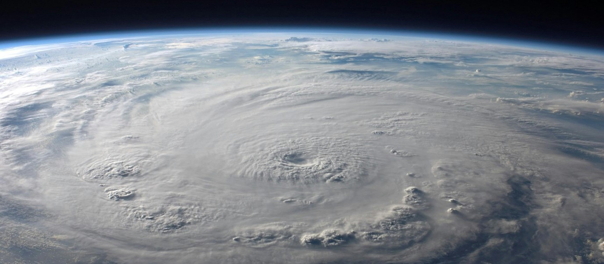

Disaster Risk
Proactive Geospatial Solutions for Safer Communities
Flood Modelling and Forecasting
I run advanced flood models and set up forecasting systems that detect flood risk impacting populations and infrastructure. By integrating real-time data from sources like GLOFAS with hydrological models, demographic information, and infrastructure data, I deliver timely insights to mitigate flood-related impacts.
Drought Assessment
I track critical drought indicators and assess their effects on agricultural productivity and food security. By combining remote sensing data with ground observations, I provide comprehensive analyses that inform effective water management and drought response strategies.
Landslides and Avalanches
I analyze landslide and avalanche risks by examining environmental factors such as topography, soil conditions, and precipitation patterns. This detailed analysis pinpoints areas where communities and vital infrastructure are most vulnerable, enabling proactive risk mitigation and planning.
Earthquake Impact Assessments
In the wake of seismic events, I conduct rapid post-event assessments to evaluate the impacts on population and infrastructure. Streamlined data access and analysis ensure that emergency response teams receive critical information quickly to coordinate effective disaster recovery efforts.
Data Management for Disaster Risk
I establish robust platforms and data analysis pipelines to make disaster risk information readily accessible to humanitarian response teams. This includes deploying spatial data catalogues, interactive web maps and dashboards, Google Earth Engine applications for remote sensing analysis, and WebGIS portals for comprehensive environmental assessments.
Integrated Disaster Risk Management
Together, these services form an integrated approach to disaster risk management—empowering communities and organizations to better prepare for, respond to, and recover from natural hazards.